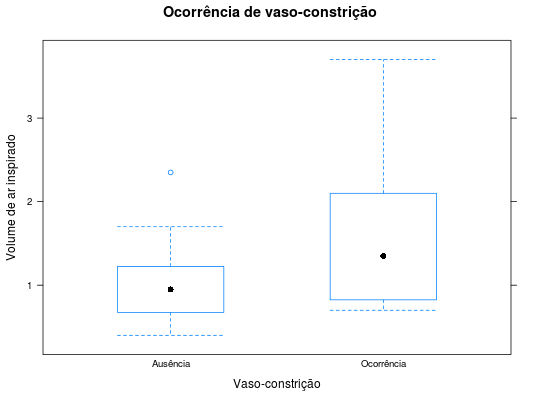
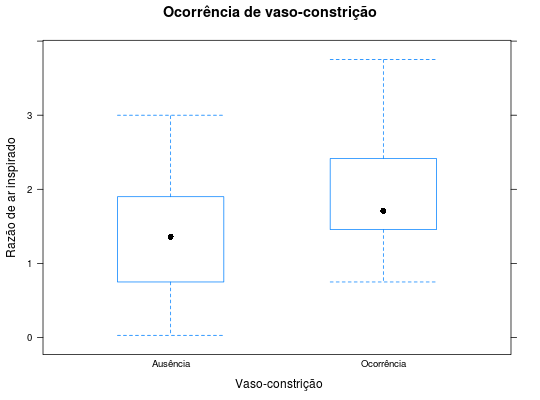

Dados de um experimento desenvolvido para avaliar a influência da quantidade de ar inspirado na ocorrência de vaso-constrição na pele dos dedos da mão. A resposta é a ocorrência (1) ou ausência (0) de compressão de vasos e as covariáveis são o volume e a razão de ar inspirado.
Um data.frame com 39 observações e 3 variáveis, em que
PAULA (2004), Tb 3.12 pág. 227.
library(lattice) data(PaulaTb3.12)#> Warning: data set ‘PaulaTb3.12’ not foundstr(PaulaTb3.12)#> 'data.frame': 39 obs. of 3 variables: #> $ vol : num 3.7 3.5 1.25 0.75 0.8 0.7 0.6 1.1 0.9 0.9 ... #> $ razao: num 0.825 1.09 2.5 1.5 3.2 3.5 0.75 1.7 0.75 0.45 ... #> $ resp : Factor w/ 2 levels "0","1": 2 2 2 2 2 2 1 1 1 1 ...bwplot(vol ~ resp, data = PaulaTb3.12, type = c("p", "a"), xlab = "Vaso-constrição", ylab = "Volume de ar inspirado", scales = list(x = list(labels = c("Ausência", "Ocorrência"))), main = "Ocorrência de vaso-constrição")bwplot(razao ~ resp, data = PaulaTb3.12, type = c("p", "a"), xlab = " Vaso-constrição", ylab = "Razão de ar inspirado", scales = list(x = list(labels = c("Ausência", "Ocorrência"))), main = "Ocorrência de vaso-constrição")